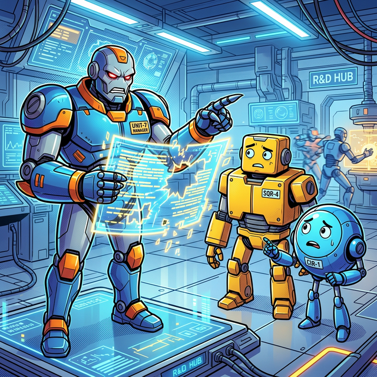
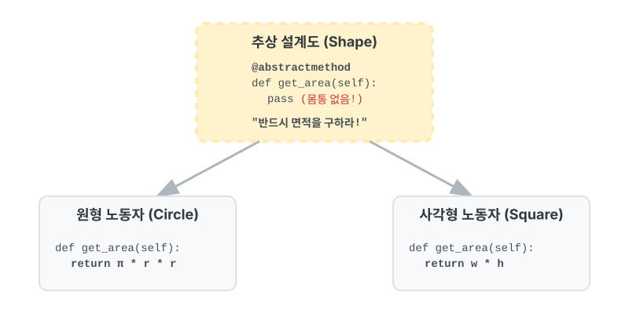
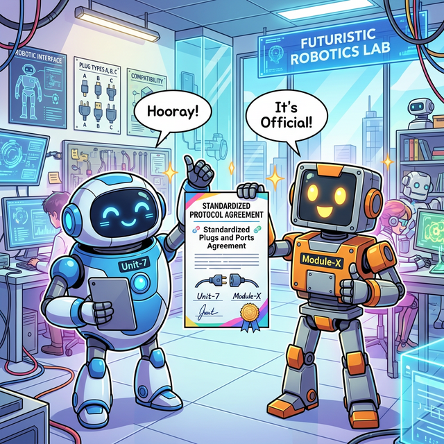
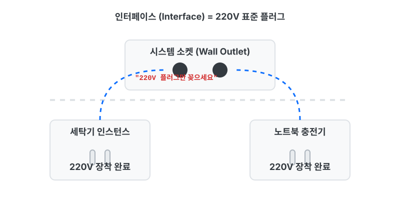
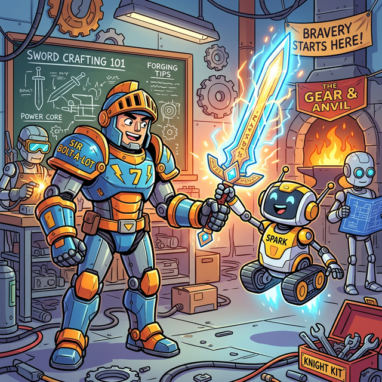
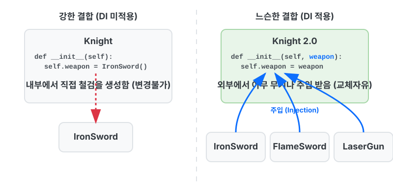

6주차: 추상 클래스와 인터페이스 - 설계 청사진과 결합도 낮추기 🗺️
구체적인 구현 대신 전체적인 규격과 약속을 제시하는 추상 클래스 및 파이썬의 인터페이스 설계 철학, 나아가 의존성을 외부에서 공급하여 코드의 결합도를 획기적으로 낮추는 의존성 주입(Dependency Injection) 기법을 마스터합니다.
학습목표
본 장에서는 깡통(몸통) 구현 없이 오직 자식 클래스가 하늘이 두 쪽 나도 지켜야만 하는 뼈대(규칙)만 세워두는 ‘추상 베이스 클래스(ABC)’의 악덕 고용주 같은 철저한 통제 시스템을 깨우칩니다. 공통적인 속성과 행위를 모아 상위 클래스를 설계하는 방법을 배웁니다.
💡 TL;DR (1분 핵심 요약): 추상화란?
- 추상 클래스 (Abstract Class): 직접 붕어빵을 찍어낼 수 없도록 막아놓은 “미완성 설계도(계약서 원본)”입니다. 수십 명의 협업자들이 각자의 모양대로 클래스를 만들 때, “반드시 이 기능만큼은 빼먹지 말고 똑같은 이름으로 구현해라!”라고 강제하는 법적 장치입니다.
abc모듈: 덕 타이핑의 자유로움이 가져오는 ‘휴먼 에러(메서드명 오타, 미구현)’를 막기 위해, 파이썬에서 공식적으로 제공하는 추상화 강제 모듈입니다. 에러를 런타임(실행)이 아닌 객체 생성시에 칼같이 잡아냅니다.
1. 지켜야만 하는 단단한 약속, 추상화 설계
협업 시 “도형을 만들 때는 넓이를 구하는 get_area 함수를 필수로 만들어 줘!”라고 말로만 부탁하면 누군가는 area(), 누군가는 calculate_area()로 각기 다르게 이름을 지어버려 결국 전체 시스템(다형성)이 붕괴됩니다. 추상화는 이 약속을 코드로 서명하게 만들고, 어기면 프로그램이 강제 종료되도록 통제합니다.
2. 파이썬의 abc (Abstract Base Classes)
파이썬은 공식 내장 라이브러리인 abc 패키지를 통해 추상Base클래스를 작성할 수 있습니다.
- 자신은 절대로 인스턴스(객체)를 허락하지 않습니다.
@abstractmethod라는 왕관(데코레이터)이 씌워진 스킬은, 자식이 반드시 복사해서 구현체를 오버라이딩(채워넣기)해야만 살려줍니다.

(웹툰 비유: 깐깐한 로봇 매니저가 일부분이 텅 비어 있는 추상적인 계약서(Shape)를 들고, 원형 로봇과 사각형 로봇에게 서명을 지시합니다. 이 계약서에는 “너희 몸통(면적)을 어떻게든 스스로 증명하라!”는 빈칸 조항이 강제되어 있습니다.)
예제 1: 추상 클래스는 실체가 아니다! (에러 발생의 미학)
from abc import ABC, abstractmethod
# 1. 추상 베이스 클래스 선언 (반드시 괄호 안에 ABC를 넣습니다)
class Shape(ABC):
# 이 메서드는 껍데기만 존재하며, 자식이 무조건 속을 채워야 합니다!
@abstractmethod
def get_area(self):
pass
# 🚨 에러 폭발 테스트 🚨
# 무지몽매한 개발자가 계약서 원본(Shape) 자체를 장난감(객체)으로 조립하려고 합니다.
# 삐용삐용! "TypeError: 추상 클래스는 인스턴스화 될 수 없습니다!" 라며 파이썬이 즉각 차단합니다.
s = Shape()
3. 필수 구현 의무 불이행 시의 참사
이번엔 하청업체(자식 클래스 Circle)가 추상 클래스(Shape)를 상속은 해놓고선, 실수로 get_area 구현을 빼먹었다고 가정해 봅시다.
class Circle(Shape):
def __init__(self, radius):
self.radius = radius
# 앗! 깜빡하고 @abstractmethod 인 get_area() 를 오버라이딩하지 않았습니다!
# 테스트: 자식 로봇을 가동합니다.
# c = Circle(5)
# 🚨 폭발! TypeError: 추상 메서드 get_area 가 구현되지 않아서 조립(인스턴스화) 불가!
코드가 다 실행되고 나서 한참 뒤에 에러가 터지는 대참사 대신, 아예 태어나는 순간 조립을 막아버려 개발자에게 실수를 즉각 알려줍니다.
🎧 Vibe Coding
🗣️ 학생 프롬프트 (AI에게 이렇게 명령해 보세요): “파이썬
abc패키지를 이용해서Payment(결제)라는 추상 클래스를 만들어줘. 1)process_payment(amount)라는 추상 메서드(@abstractmethod)를 딱 하나만 선언해. 2) 이걸 상속받는 자식 클래스CreditCard랑Paypal두 개를 만들고,process_payment를 정상적으로 오버라이딩해서 알아서 콘솔에 결제수단과 금액을 출력하게 해. 3) 마지막으로Bitcoin클래스도Payment를 상속받게 만드는데, 고의로process_payment구축을 빼먹(pass)어봐. 4) 세 개의 클래스를 직접 다 실체화(인스턴스 생성) 하려고 시도해 보고 어떤 콘솔 에러가 터지는지, 그 이유를 내게 아주 쉽게 주석으로 타이핑해 줘.”
코딩 영단어 학습 📝
- Abstraction: 추상화. (Abstract(추상적인). 구체적인 디테일이나 계산 로직은 껍데기에 감춰버리고, 오직 바깥으로 드러나는 핵심 개념(버튼 이름, 함수 이름) 스케치만 남겨 하위 조립자들에게 “여기에 맞춰서 짜기만 해!”를 지시하는 설계 기법입니다.)
학습목표
본 장에서는 클래스와 클래스 사이의 사용 약속인 인터페이스(Interface)를 배웁니다. 파이썬만의 느슨하고 자유로운 ‘덕 타이핑(Duck Typing)’ 문화 속에서도, 대형 프로젝트의 치명적인 에러를 원천 봉쇄하기 위해 견고한 인터페이스 계약서를 어떻게 코드로 작성하고 강제하는지 실전 코드로 익힙니다.
💡 TL;DR (1분 핵심 요약): 인터페이스란?
- 인터페이스 (Interface): “반드시 이 기능만큼은 빼먹지 말고 구현해라!”라는 기능 명세, 즉 계약서 역할을 기대하는 것입니다. 파이썬에서는 별도의
interface키워드가 없기에 보통 추상 클래스(abc)나 덕 타이핑을 통해 이를 달성합니다. - 덕 타이핑 🦆 (Duck Typing): 자바처럼 서약서(
implements)를 명시적으로 쓰지 않아도, 꽥꽥(필수 스킬) 소리만 낼 수 있다면 시스템이 용인해 주는 파이썬 특유의 자유로운 문화입니다.
1. 인터페이스 계약 의무의 완벽한 이행과 다형성
이전 장(추상화)의 Shape 추상 클래스가 제시한 안전 장치를 뚫고, 완벽하게 인터페이스 규격을 맞춘 모범 답안을 보겠습니다.

(웹툰 비유: 동그라미 로봇과 네모 로봇이 겉모습은 전혀 다르지만, 둘 다 완벽히 똑같은 규격의 “220V 표준 플러그”를 번쩍 들고 환호합니다. 220V 소켓 입장에서 저 로봇이 동그라미든 네모든 알 바 아닙니다. 규격에 맞는 플러그만 꽂히면 전기를 통하게 해 줍니다.)
예제: 각자의 방식으로 계약 이행
import math
from abc import ABC, abstractmethod
class Shape(ABC):
@abstractmethod
def get_area(self):
pass
# 동그라미: 자신만의 파이(π) 방식을 사용하여 완벽하게 구현을 해냈습니다!
class Circle(Shape):
def __init__(self, radius):
self.radius = radius
def get_area(self): # 계약서에 명시된 이름 토시 하나 틀리지 않음
return math.pi * (self.radius ** 2)
# 네모: 자신만의 (가로 * 세로) 공식을 사용하여 완벽하게 구현을 해냈습니다!
class Rectangle(Shape):
def __init__(self, w, h):
self.w = w
self.h = h
def get_area(self): # 계약서 조항 완벽 이행
return self.w * self.h
# ✅ 통과! 에러 없이 부드럽게 실체화됩니다.
c = Circle(5)
r = Rectangle(4, 5)
print(f"원 넓이: {c.get_area()} | 사각형 넓이: {r.get_area()}")
이 깐깐한 인터페이스(Interface) 계약서 제도가 정착되면, 메인 지휘자는 “이 도형이 원인지 네모인지” 검사할 필요 없이 눈을 감고 도형.get_area()를 마음껏 호출하며 다형성을 폭발시킬 수 있습니다.
2. ☕ Java vs 🐍 Python 스나이퍼 비교
1. 전용 키워드의 유무
- Java:
interface,implements,abstract라는 전용 문법 키워드가 언어 스펙에 하드코딩 되어있을 정도로 인터페이스 설계의 심장 같은 언어입니다. - Python: 인터페이스라는 전용 키워드가 아예 없습니다! 오직 외부 플러그인 같은 느낌의
from abc import ABC패키지를 끌어앉고class Shape(ABC):와 같이 우회하여 구현합니다.
2. 덕 타이핑 (Duck Typing)의 용인
- Java: 인터페이스 계약서(
implements Animal)에 사인하지 않은 객체는, 아무리eat()함수를 완벽하게 구현했어도 결코 다형성 리스트에 들어갈 수 없습니다. 엄청나게 고지식합니다. - Python: 파이썬은 호탕합니다. 굳이
Shape(ABC)가문 소속이라고 사인해주지 않았더라도, 객체 배때지에 누군가 몰래get_area()함수 하나만 끼워놓았다면, 다형성 리스트에서 군말 없이 정상 실행시켜 버립니다. “오리 소리가 나면 그냥 오리지 족보가 뭐가 중요해!” 마인드입니다.
🎧 Vibe Coding
🗣️ 학생 프롬프트 (AI에게 이렇게 명령해 보세요): “파이썬으로 ‘오리(Duck)’와 ‘로봇 오리(RobotDuck)’ 클래스를 만들어줘. 공통 부모를 상속받거나
abc를 사용하지 말고, 둘 다 각각quack()이라는 메서드만 갖게 해. 외부에서 어떤 리스트에 담긴 객체들을 넘겨받아서, 그 객체들의 타입이 뭔지 전혀 확인하지 않고 무작정.quack()을 호출해보는make_it_quack함수를 만들어 줘. 그리고 이게 왜 파이썬의 ‘덕 타이핑’이라는 매력인지 초보자에게 쉽고 재치있게 주석으로 설명해 줘.”
코딩 영단어 학습 📝
- Interface: 경계면, 소통 접점. (Inter(사이) + Face(얼굴). 자판기를 쓸 때 안에 복잡한 회로도 몰라도 ‘동전 구멍’과 ‘콜라 버튼’만 누르면 작동하듯이, 클래스와 클래스 사이의 사용 약속 계약서 명세를 의미합니다.)
- Duck Typing: 덕 타이핑. (“만약 어떤 동물이 오리처럼 생겼고, 오리처럼 헤엄치고, 오리처럼 꽥꽥 소리를 낸다면, 우리는 그걸 그냥 오리라고 부른다.”라는 유명한 미국 시에서 유래한 프로그래밍 언어의 쿨하고 동적인 성향을 뜻합니다.)
학습목표
본 장에서는 클래스 간의 결합도를 획기적으로 낮추어 “언제든지 부품을 갈아 끼울 수 있는” 유연한 아키텍처를 진두지휘하는 의존성 주입(DI)의 개념을 익힙니다. 상속을 넘어선 객체지향 확장성의 끝판왕 설계 패턴을 경험합니다.
💡 TL;DR (1분 핵심 요약): 의존성 주입이란?
- 의존성 (Dependency): A 클래스가 동작하기 위해 B 클래스가 반드시 필요한 상태(연결된 상태)를 말합니다. 보통 “기사가 칼을 가지고 있는 상황”과 같습니다.
- 주입 (Injection): 기사 몸속(코드 내부)에서 칼(객체)을 직접 생성하지 않고, 밖에서(코드 외부에서) 누군가 칼을 만들어서 기사의 손에 쥐여주는(전달해 주는) 방식입니다.
- DI의 목적: 언제든지 녹슨 칼은 버리고 번개 칼로 무기를 교체할 수 있듯이, 코드의 수정을 최소화하고 클래스 간의 느슨한 결합(Loose Coupling)을 달성하기 위해서입니다.
1. 꽉 막힌 의존성: 기사가 몸속에서 칼을 제련한다?
의존성 주입을 쓰지 않은 끔찍한 코드를 보겠습니다.
예제 1: 강한 결합 (Tight Coupling)
클래스 내부에서 필요한 객체를 무작정 스스로 생성해 버리면, 평생 그 객체에만 묶이는 노예가 됩니다.

(웹툰 비유: 최전방에 기사 로봇 한 명이 서 있습니다. 철광석을 주워서 자기 배 속에 있는 대장간 용광로에서 낑낑대며 칼을 스스로 만들어 쓰고 있습니다(강한 결합). 옆에 있던 만렙 로봇이 기겁하며 묻습니다. “아니, 밖에서 칼을 만들어다가 네 손에 쥐여주면(주입) 되잖아?”)
class IronSword:
def attack(self):
return "철검으로 찌르기! 10 데미지!"
class Knight:
def __init__(self):
# 🚨 최악의 설계: 기사가 직접 몸속에서 철검을 생성합니다.
# 이 기사는 평생 철검밖에 못 쓰는 저주에 걸렸습니다.
self.weapon = IronSword()
def attack(self):
print(self.weapon.attack())
k = Knight()
k.attack()
# 만약 상황이 변해 기사에게 '전설의 불꽃검'을 쥐어주고 싶다면?
# 안타깝게도 Knight 클래스의 내부 코드를 직접 뜯어 고쳐야(수정) 합니다.
2. 의존성 주입 (DI): 밖에서 무기를 쥐여줘라!
이번엔 아주 깔끔하게 바뀐 설계입니다. 무기를 스스로 만들지 말고, 생성자(또는 메서드)를 통해 외부에서 건네받도록 설계합니다.
예제 2: 느슨한 결합 (Loose Coupling)
# 다양한 무기들 제조
class IronSword:
def swing(self):
return "챙강! 철검 치기!"
class FlameSword:
def swing(self):
return "화르륵! 불꽃의 베기!"
# 기사 2.0 설계
class Knight:
# 💡 핵심: 외부에서 weapon을 '주입(Injection)' 받습니다!
def __init__(self, weapon):
self.weapon = weapon
def attack(self):
print(self.weapon.swing())
# 상황에 따라 밖(Main 로직)에서 알아서 무기를 교체해 주입합니다.
iron_sword = IronSword()
flame_sword = FlameSword()
# 1. 초보 기사: 철검 주입
k1 = Knight(weapon=iron_sword)
k1.attack()
# 2. 만렙 기사: 불꽃검 주입 (Knight 코드 내부를 1줄도 수정하지 않았습니다!)
k2 = Knight(weapon=flame_sword)
k2.attack()
이처럼 “내부에서 new(생성)하지 말고 밖에서 받자!”는 아주 단순한 원리 하나가 수만 줄짜리 엔터프라이즈 시스템의 플러그인(Plug-in) 아키텍처를 뒤받치고 있는 제1원칙입니다.
코딩 영단어 학습 📝
- Dependency: 의존성. (내가 살기 위해 남에게 기대고 있는 상태. 코딩에서는 내 클래스가 돌아가기 위해 반드시 다른 클래스의 객체가 필요한 끈끈한 관계를 말합니다.)
- Injection: 주입, 주사. (내부에서 자체 생성하지 않고, 혈관에 주사액을 꽂아 넣듯 바깥의 프레임워크나 메인 컨트롤러가 객체를 쓱 밀어 넣어 주는 동작을 의미합니다.)
- Loose Coupling: 느슨한 결합. (두 객체가 서로 알긴 알지만, 언제든 다른 놈으로 갈아 치워도 시스템이 터지지 않도록 가볍게 연결된 유연한 구조를 말합니다.)
✍️ 이번 주 연습 문제
문제 1. abc 모듈의 @abstractmethod를 사용하여 자신만의 추상 클래스 Vehicle을 정의하고, 이를 상속받아 세부 메서드를 필수 구현하는 Car와 Bicycle 자식 클래스를 완성해 보세요.
문제 2. 강한 결합(Tight Coupling)과 느슨한 결합(Loose Coupling)의 차이점을 실생활의 부품 대체 사례를 들어 비교 설명하고, 의존성 주입이 주는 설계상 이점을 쓰세요.
문제 3. (심화) 파이썬에서 추상 인터페이스를 보장하기 위해 덕 타이핑(Duck Typing)을 사용하는 방식과 @abstractmethod를 쓰는 공식적이고 엄격한 방식의 장단점을 아키텍처 관점에서 분석해 보세요.
📖 교재 상세 학습: 08 강제적인 규약: 추상 클래스(Abstract Class)
08 뼈대만 물려주고 구현은 강제하기: 추상 클래스(Abstract Class)
지금까지 우리는 부모가 완성된 기능(메서드)을 만들어 놓으면 자식이 편하게 그걸 가져다 쓰는 ‘상속’을 배웠습니다. 그렇다면 만약 부모가 “나는 어떤 입구랑 출구가 필요한지만(이름만) 껍데기로 만들어 둘 테니, 안에 들어가는 진짜 알맹이(기능)는 상속받는 자식인 너희들이 무조건 각자 알아서 새로 짜넣어라!” 하고 강제하고 싶다면 어떻게 해야 할까요?
이때 등장하는 것이 바로 추상 클래스(Abstract Class)입니다. 메서드의 ‘이름과 인자’라는 뼈대만 존재하고, 뱃속의 실제 코드는 텅 비어있는 미완성 클래스입니다.
1. 왜 이런 텅 빈 껍데기가 필요할까? (다형성의 보장)
게임을 만들 때 여러 개발자에게 “각자 몬스터를 하나씩 만들어와라”라고 지시했다고 칩시다.
어떤 개발자는 공격 함수를 attack()으로 만들고, 다른 개발자는 hit(), 또 다른 사람은 strike()로 마음대로 지어버리면 나중에 이 몬스터들을 한 번에 조종할 때 코드가 엉망진창이 됩니다.
이때 추상 클래스를 부모로 만들어 “내 밑으로 상속받는 모든 몬스터는 무조건 attack()이라는 이름의 메서드를 니들이 직접 안에 코드를 채워 넣어서 구현해라. 안 그러면 에러 띄워서 게임 실행도 못하게 막을 거다!”라고 강력한 규약(Protocol)을 걸어버리는 것입니다.
2. 파이썬에서 추상 클래스 만들기 (abc 모듈)
파이썬은 abc (Abstract Base Classes)라는 멋진 기본 모듈을 통해 추상 클래스를 지원합니다.
추상 클래스를 만들려면 1. ABC라는 특별한 부모를 상속받고, 2. 강제할 메서드 위에 @abstractmethod 데코레이터를 붙여주면 됩니다.
from abc import ABC, abstractmethod
# [미완성 뼈대] 추상 클래스 선언 (이 자체로는 인스턴스를 찍어낼 수 없습니다)
class MonsterProtocol(ABC):
# 자식에게 강제로 할당할 미완성 과제 (뼈대만 있고 본문은 pass)
@abstractmethod
def attack(self):
pass
@abstractmethod
def move(self):
pass
# [개발자 A의 바른 예]
class Slime(MonsterProtocol):
def attack(self):
print("슬라임이 끈적한 점액을 발사합니다!")
def move(self):
print("슬라임이 꾸물꾸물 기어갑니다.")
# 오케이 통과! 완벽하게 작동합니다.
slime = Slime()
slime.attack() # 슬라임이 끈적한 점액을 발사합니다!
# [개발자 B의 잘못된 예]
class Dragon(MonsterProtocol):
def attack(self):
print("드래곤의 거대한 브레스 파이어!!")
# 앗! 실수로 move() 를 오버라이딩(구현)하는 것을 깜빡했습니다!!
# [에러 폭발!] 부모가 지시한 숙제(move 구현)를 다 안 했다고 객체 생성 자체를 거부합니다!
# dragon = Dragon()
# TypeError: Can't instantiate abstract class Dragon with abstract method move
3. 파이썬 코어의 숨겨진 추상 클래스들
파이썬 내부를 뜯어보면, 우리가 자주 쓰는 리스트(List), 딕셔너리(Dict) 같은 녀석들도 제멋대로 만들어진 게 아닙니다. 파이썬 코어 개발자들이 collections.abc라는 곳에 만들어둔 수많은 추상 클래스의 깐깐한 규약을 모두 통과한 엘리트 객체들입니다.
Sequence추상 클래스: “너희가 순서가 있는 리스트나 튜플 행세를 허고 싶어? 그럼 길이(__len__) 재는 법이랑 인덱싱(__getitem__) 하는 법은 무조건 구현해!”Mapping추상 클래스: “너희가 딕셔너리처럼 키값으로 놀고 싶다구? 그럼 키값 불러오는 방식 뼈대를 강제로 지켜!”
이렇게 파이썬은 보이지 않는 곳에서 추상 클래스라는 단단한 뼈대를 통해 거대한 표준을 유지하고 있는 아주 치밀한 언어입니다.
📖 교재 상세 학습: 1. 추상 클래스 기본기 (abc 모듈)
1. 추상 클래스 기본기 (abc 모듈)
로봇 공장 시스템을 만든다고 상상해봅시다. 모든 ‘로봇’은 ‘움직이기’ 기능을 반드시 만들어야 한다는 공통 규칙을 정하고 싶습니다. 이때 사용하는 것이 바로 추상 클래스입니다.
파이썬에서는 abc (Abstract Base Classes) 모듈을 이용해 추상 클래스를 정의합니다.
1.1 강제 규칙 만들기 (추상 메서드)
추상 클래스 자체는 불완전한 뼈대이므로 인스턴스(실제 로봇)를 만들 수 없습니다. 이것을 상속받는 자식 클래스(구현 클래스)가 지시사항(추상 메서드)을 모두 채워 넣어야만 비로소 완성품이 됩니다.
from abc import ABC, abstractmethod
# ABC(Abstract Base Class)를 상속받으면 추상 클래스가 됩니다.
class RobotBlueprint(ABC):
# "자식 클래스는 무조건 이 메서드를 구현해라!" 라는 데코레이터
@abstractmethod
def move(self):
pass # 뼈대이므로 구현하지 않습니다.
# 자식 클래스 (구현 클래스)
class TankRobot(RobotBlueprint):
def move(self):
return "캐터필러로 묵직하게 움직입니다!"
만약 TankRobot이 move 메서드를 빼먹고 인스턴스를 만들려고 하면 에러(TypeError)가 나면서 프로그램이 멈춥니다. 안전장치가 완벽하죠!
1.2 “넌 이제 내 자식이다!” - 가상 서브클래스 (register)
직접 상속(class A(B):)을 받지 않아도, 족보에 강제로 이름을 올려 “가상의 자식”으로 취급하는 재미있는 기능이 있습니다.
from abc import ABC
class PowerCore(ABC):
pass
# 배터리 클래스는 PowerCore를 상속받은 적이 없지만...
class Battery:
pass
# 명부(register)에 강제 등록합니다.
PowerCore.register(Battery)
# 진짜 자식이냐고 물어보면? True가 나옵니다!
print(issubclass(Battery, PowerCore)) # True
1.3 암묵적 규칙 (프로토콜과 Duck Typing)
파이썬은 아주 유연한 언어입니다. “오리처럼 걷고 오리처럼 꽥꽥대면, 그건 오리다(Duck Typing)!”라는 철학이 있죠.
즉, 명시적으로 추상 클래스를 상속받지 않았더라도 클래스 내부에 특정 매직 메서드(예: __len__)를 잘 만들어 두었다면, 파이썬은 이를 길이를 잴 수 있는 Sized 컬렉션의 자식이라고 암묵적으로 인정해 줍니다. 이렇게 동작과 행동 패턴(메서드 유무)만으로 자격을 판단하는 방식을 ‘프로토콜 인터페이스(Protocol Interface)’라고 부릅니다.
📖 교재 상세 학습: 2. 숫자들의 가계도 (numbers)
2. 숫자들의 가계도 (numbers)
우리가 매일 쓰는 1, 3.14 같은 단순한 숫자들도 파이썬 내부에서는 아주 거대한 족보(추상 클래스 체계)를 가지고 있습니다. 파이썬의 numbers 모듈을 들여다보면 수학의 수 체계가 그대로 코드로 구현되어 있습니다.
2.1 숫자의 가장 큰 조상, Number
모든 숫자의 단군 할아버지(?) 격인 추상 클래스는 Number입니다. 정수(int), 실수(float), 복소수(complex) 등 파이썬 내의 모든 숫자 자료형은 결국 이 Number 소속입니다.
import numbers
# 정수 10은 Number의 후손이 맞을까?
print(isinstance(10, numbers.Number)) # True
# 3.14 (실수)도 Number의 후손일까?
print(isinstance(3.14, numbers.Number)) # True
2.2 구체적인 숫자 계급표
numbers 모듈 안에는 점차 구체화되는 4단계의 숫자 추상 클래스 계급이 있습니다.
Number(수): 가장 큰 범주 (더하기, 빼기 등을 포괄적 정의)Complex(복소수): 내장complex타입과 연관 (실수부, 허수부 등)Real(실수): 내장float타입과 연관Rational(유리수): 분수 표기가 가능한 숫자 (예:fractions.Fraction)Integral(정수): 내장int타입과 연관
(아래로 내려갈수록 상위 클래스의 성질을 물려받아 더 좁은 범위의 숫자가 됩니다.)
import numbers
import fractions
# int(정수)는 Integral(정수 추상 클래스)의 자식입니다.
print(issubclass(int, numbers.Integral)) # True
# 분수(Fraction)는 실수(Real)의 자식입니다.
print(issubclass(fractions.Fraction, numbers.Real)) # True
파이썬의 내장 함수나 연산자들은 내부적으로 숫자가 들어올 때 “아, 이 녀석이 Real 추상 클래스의 규격을 만족하는 (즉, 더하고 뺄 수 있는) 진짜 숫자가 맞구나!”라고 판단하여 똑똑하게 계산을 처리합니다.
📖 교재 상세 학습: 3. 컬렉션의 뼈대 (collections.abc)
3. 컬렉션의 뼈대 (collections.abc)
리스트, 튜플, 딕셔너리, 셋(Set) 등 여러 개의 데이터를 묶어 담는 파이썬의 주머니들을 ‘컬렉션(Collection)’이라고 합니다. 이 컬렉션들도 결국 제멋대로 만들어진 것이 아니라, collections.abc 라는 강력한 가이드라인에 따라 설계되었습니다.
3.1 삼위일체: 컬렉션의 기초 조건
파이썬에서 ‘컬렉션’ 대접을 받으려면 (즉, Collection 추상 클래스가 되려면) 다음 세 가지 기능의 뼈대를 무조건 갖춰야 합니다.
Sized: 얼마나 들어있는지 길이(__len__)를 잴 수 있을 것.Iterable: 하나씩 차례대로 꺼낼 수(__iter__) 있을 것.Container: 그 안에 특정 요소가 들어있는지 포함 여부(__contains__)를 검사할 수 있을 것.
3.2 줄 세우기: Sequence 패밀리
문자열(str), 튜플(tuple), 리스트(list)처럼 순서(인덱스)가 있는 자료형들의 부모가 바로 Sequence 추상 클래스입니다.
순서가 있으니 추가로 대괄호에서 인덱스로 찾기(__getitem__)가 가능해야 하죠.
이 중에서 내용물을 수정할 수 있는 리스트(list) 같은 녀석들은 다시금 MutableSequence 라는 상위 클래스를 상속받아 요소를 삭제하거나 삽입하는 강력한 능력을 얻습니다.
3.3 열쇠와 자물쇠: Mapping 패밀리
딕셔너리(dict)처럼 “이름표(Key)”로 데이터를 찾는 자료형들의 부모는 Mapping 추상 클래스입니다.
역시 딕셔너리는 내부의 값을 맘대로 바꿀 수 있으므로 MutableMapping 클래스 아래에 소속되어 있으며, 수정을 담당하는 매직 메서드(__setitem__ 등)를 구현하고 있습니다.
3.4 짝퉁(?) 객체: View 자료형
딕셔너리의 키(dict.keys())나 값(dict.values())을 조회하면 나오는 결과는 리스트가 아닙니다. 이들은 데이터를 복사해서 새로 만든 게 아니라, 원본 데이터베이스에서 그 부분만 들여다볼 수 있는 ‘투명한 유리창(View)’ 역할을 합니다.
파이썬은 이를 위해 KeysView, ValuesView, ItemsView 등의 추상 클래스를 따로 관리합니다. 이런 뷰(View) 형태를 쓰면 매번 덩치가 큰 데이터를 복사할 필요가 없어 컴퓨터 자원을 크게 절약할 수 있습니다.
📖 교재 상세 학습: 4. 시퀀스를 다루는 내장 도구들
4. 시퀀스를 다루는 내장 도구들
파이썬은 여러 개의 데이터(시퀀스)를 편리하게 가공할 수 있도록 내장형 마법 도구들을 기본 지원합니다. 이 도구들은 함수처럼 생겼지만 사실은 하나의 클래스(객체)로 작동합니다. 가장 큰 특징은 이들은 메모리를 아끼기 위해 “필요할 때 딱 하나씩만” 데이터를 뱉어내는 반복자(Iterator)나 반복형(Iterable) 성질을 갖고 있다는 것입니다.
4.1 짝 맞추기 달인: zip
서로 다른 겉옷(리스트)에 들어있는 요소들을 순서대로 하나씩 꺼내서 예쁜 순서쌍(튜플)으로 지퍼(zip)를 채워주는 기계입니다. 가장 짧은 길이를 가진 리스트에 맞춰서 동작합니다.
names = ["Iron Man", "Spider-Man", "Hulk"]
colors = ["Red", "Red-Blue", "Green", "Extra-Color"] # 마지막은 짝이 없어 무시됨
# zip 객체(반복자)가 만들어짐
z = zip(names, colors)
# 눈으로 보려면 리스트로 포장합니다.
print(list(z))
# [('Iron Man', 'Red'), ('Spider-Man', 'Red-Blue'), ('Hulk', 'Green')]
[!NOTE] 반복자(Iterator) 인스턴스는 한 번 데이터를 뽑아 쓰고 나면 텅 빈 껍데기가 되므로, 다시 쓰려면 새로 만들어야 합니다!
4.2 내 맘대로 번호 부여기: enumerate
데이터들 앞에 순번 스티커를 착착 붙여주는 기계입니다. 리스트의 인덱스 번호와 실제 내용을 쌍으로 묶어줍니다.
heroes = ["Batman", "Superman", "Flash"]
# 번호 스티커를 붙입니다. (기본은 0번부터 시작)
for idx, hero in enumerate(heroes):
print(idx, hero)
# 0 Batman / 1 Superman / 2 Flash
# 100번부터 시작하고 싶다면?
print(list(enumerate(heroes, 100)))
# [(100, 'Batman'), (101, 'Superman'), (102, 'Flash')]
4.3 뒤집기 요정: reversed
주어진 데이터를 맨 끝에서부터 역순으로 집어서 던져주는 반복자를 만듭니다. 원본 자체를 거꾸로 파괴하는 것이 아니라, 꺼내는 순서만 거꾸로 해주는 아주 착한 기능입니다.
nums = [1, 2, 3, 4]
r = reversed(nums)
print(list(r)) # [4, 3, 2, 1]
4.4 무한의 숫자 찍어내기: range
range는 리스트처럼 전체 숫자를 한 번에 메모리에 올리지 않고 숫자들을 생성하는 규칙(시작, 끝, 보폭)만 똑똑하게 기억하는 반복형(Iterable) 객체입니다. 덕분에 range(1000000) 처럼 100만 길이를 만들어도 컴퓨터가 힘들어하지 않습니다.
📖 교재 상세 학습: 5. 타입 힌트와 코드 테스트
5. 타입 힌트와 코드 테스트
파이썬은 변수에 “나는 평생 정수(int)만 받을 거야!” 하고 못 박지 않는 동적인 언어입니다. 아주 편하지만, 가끔 다른 사람이 문자열을 집어넣어 프로그램이 와장창 깨지는 사고가 나기도 하죠. 이런 실수를 막기 위해, 코드를 실행하기 전 에디터 화면에 “이 변수는 이런 타입만 넣어줘”라고 팻말을 달아주는 기능이 바로 타입 힌트(Type Hint)입니다.
5.1 코드에 달아주는 명찰 (Type Annotation)
파이썬 3.6부터 변수 뒤에 콜론(:)을 붙이고, 함수 화살표(->)를 사용하여 의도하는 데이터의 종류(타입)를 메모해둘 수 있습니다.
# a와 b는 정수(int)를 받고, 결과 결과도 정수(int)가 나온다고 메모!
def add_numbers(a: int, b: int) -> int:
return a + b
# 문자열을 넣어도 프로그램이 당장 멈추지는 않지만...
# 똑똑한 백신(에디터의 타입 체커)이 빨간 줄을 그어 경고해줍니다!
print(add_numbers("Hello", "World"))
주의사항: 타입 힌트는 어디까지나 ‘힌트(주석)’일 뿐이라, 실제 파이썬 엔진은 이를 쿨하게 무시하고 코드를 강제로 실행시킵니다. 따라서 코드 규칙 방어용으로 코딩 단계에서 사용합니다.
5.2 typing 모듈로 더 정교한 힌트 만들기
조금 더 디테일한 힌트를 주기 위해 파이썬은 typing이라는 별개의 모듈을 제공합니다.
예를 들어 그냥 리스트가 아니라 “정수만 들어있는 리스트”라고 확실히 못 박고 싶을 때 사용합니다.
from typing import List, Dict
# 이 리스트 안에는 문자열(str)만 들어와야 합니다!
names: List[str] = ["Alice", "Bob"]
# 딕셔너리의 키는 문자열(str), 값은 정수(int)만 와야 합니다!
scores: Dict[str, int] = {"Alice": 100, "Bob": 80}
나만의 타입 만들기 (TypeVar, Generic)
어떤 함수는 “문자열과 바이트 둘 다 받을 수 있는데, 들어온 녀석의 타입을 그대로 돌려주고 싶어!” 할 때가 있습니다. 이때는 TypeVar (타입 변수)를 만들어서 사용합니다.
from typing import TypeVar
# T는 딱 str이나 bytes 둘 중 하나만 된다고 규칙을 만듭니다.
T = TypeVar('T', str, bytes)
def concat(x: T, y: T) -> T:
return x + y
5.3 이 설명서가 참인지 확인해줘! (doctest)
함수를 만들 때, 함수 바로 아래 큰 따옴표 3개 """ 로 묶어서 “이 함수는 이렇게 쓰는 거야~” 하고 작성한 설명서를 독스트링(Docstring)이라고 부릅니다.
여기에 덤으로 Python 대화형 창(>>>)에서 실행하는 예제 코드를 함께 적어두면, 파이썬이 이 주석을 눈으로 읽고 “음, 설명서에 적힌 코드의 결과가 실제 결과랑 똑같이 나오는지 내가 검사해줄게!”라고 알아서 테스트해주는 마법 기능이 doctest입니다.
def my_func(a, b):
"""
이 함수는 두 숫자를 더합니다.
>>> my_func(2, 3)
5
>>> my_func(10, 10)
20
"""
return a + b
이렇게 적어두고 터미널에서 python -m doctest 파일명.py 시스템 명령을 내리면, 만약 내 코드의 덧셈 로직이 틀렸을 경우 주석에 쓴 결과(5, 20)와 다르다며 삑- 하고 에러를 뿜어주어 아주 편리하게 디버깅이 가능합니다.